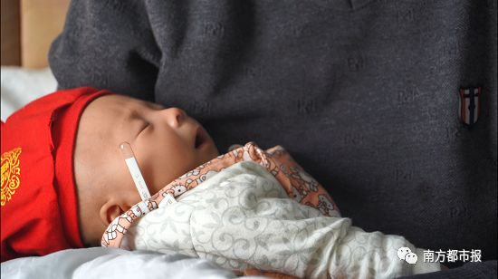
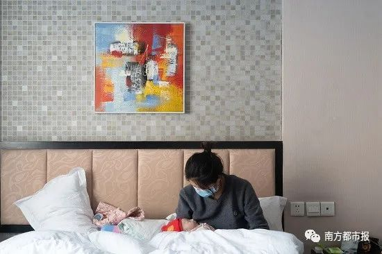
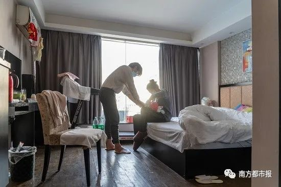
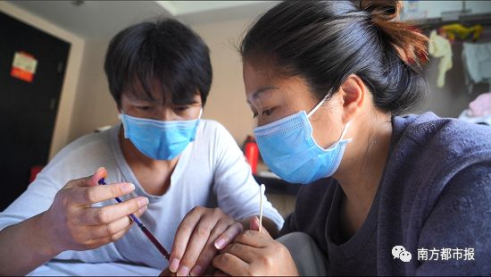
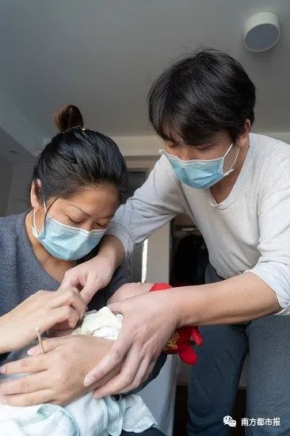
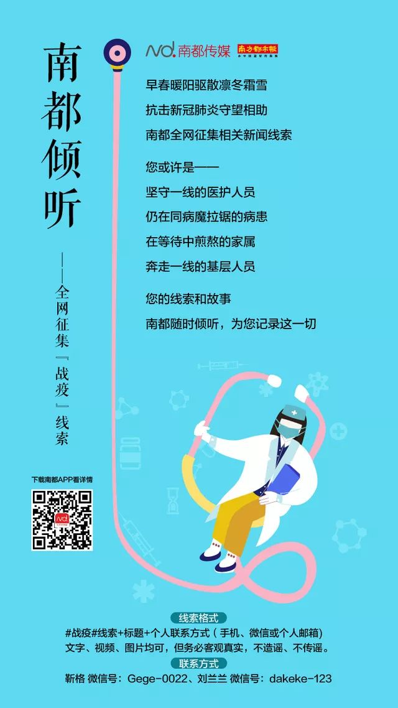

情殇，致武汉 （诗二首）
原文链接 备份链接 2020 02 26 走了 艾晓明 武汉的田先生说 照片上左三是小区邻居 前天走了 上有老下有小 左四是他的妻子 女儿与我的大孙子同龄 武汉的王先生说 我高中的班主任走了 夏天时我还去探望过他 他请我们吃了饭 又把我送 …

武汉日记
这个冬天，我们遇上了一个从未见过的“新型冠状病毒肺炎”，遭遇了前所未有的冲击，防疫是当下全国人民的重点。在封城之后，在重点疫情区的武汉人民过得怎样？
南方都市报官方微信将陆续推出“武汉日记”，通过武汉当地人的讲述看看他们过得怎样。
武汉日记④
罕见病儿一家三口被困武汉
2月29日，第13个国际罕见病日如期而至。新冠肺炎疫情之下，原本就承受病痛的罕见病群体，面临了新的困境。
“孩儿听话莫动啊……”
周先生像捏飞镖一样捏着针管，顿了一秒，把一指节长的针头扎进宝宝大臂。刚出生两个多月的儿子顿时从“咿呀”升级为大哭。
夫妻俩跪在地上，妻子刘女士按住侧躺在床角的孩子。“莫动莫动，”周先生抽出捏针管的右手，把红色的维生素B12注射液慢慢推进儿子体内。
突然降临的新冠疫情，逼这位37岁的半挂卡车司机学会了这项新技术。照着之前护士给孩子打针的视频，他先拿自己做过模拟实验，“看怎么打不痛，是推快还是推慢”。
眼下，周先生一家困在了武汉。封城之前，他们带刚出生的儿子康康来武汉看罕见病。甲基丙二酸血症，一种常染色体隐性遗传病。
疫情打断了治疗，儿子赖以生存的药物和特殊配方奶粉所剩无几。武汉快递不方便，医疗资源也不得不向新冠肺炎患者大量倾斜，他们也无从补给。

廉价酒店外，路上空无一人，偶尔有外卖小哥骑着电动车穿过。
刘女士哄着儿子，孩子胳膊上慢慢肿起了大包。
【南都N视频】视频：南都特派记者 陈冲 吴斌 后期：张驰 编辑：陈蓓蕾
患病
医生一度劝周先生放弃。
这是周先生和妻子刘女士的第3个孩子，今年元旦出生，取名康康。但康康生来就患有甲基丙二酸血症。
甲基丙二酸是人体代谢产物，正常情况下可快速排出体外。但患有这种遗传病的人，甲基丙二酸会在血液中逐渐积累，从而导致甲基丙二酸血症。严重者，会出现神经、肝脏、肾脏、骨髓等的损伤。这种常染色体隐性遗传病，已被纳入国家卫健委第一批罕见病目录。
小康康一家住在湖北襄阳宜城农村。2017年，康康曾有过一个姐姐，但出生5天就不幸夭折，当时没能查出病因。医生后来判断，可能正是因为甲基丙二酸血症。

康康刚出生时有些缺氧，医生给他吸了一个半小时的氧气，并告诉爸爸周先生，如果孩子有嘴发青、脸发白等症状，就及时通知医生。
小康康当时看起来很正常，但考虑他姐姐的经历，父母“从心里面担心害怕”，就把他留在保温箱让医生继续观察，“他们比我们懂得多”。
小康康的身体一天比一天不好。出生第三天的时候，新生儿肺炎和黄疸同时出现，呼吸很快，每分钟超过80次，并发胸口塌陷。
放弃
宜城医疗条件有限，医生束手无策，建议他们转院到“大一点”的襄阳市中心医院治疗。转院后，小康康经历两次抢救，效果都不好。
1月7日，医生安排小康康采血做遗传代谢病检测。3天后，从武汉发回的检测报告显示，他可能患有甲基丙二酸血症。
虽然甲基丙二酸血症是罕见病，但并非无法救治。除了常规药物外，医生建议小康康喝一种特殊奶粉，不含异亮氨酸、蛋氨酸、缬氨酸、苏氨酸，限制天然蛋白质摄入，以减少“致命”的甲基丙二酸的产生。

不过，这种奶粉并未在国内上市，医生让他们想办法海淘。爸爸周先生找不到人，还是医生帮忙联系了上海的卖家，买了一罐特殊奶粉，寄过来要等好几天。
与此同时，小康康的病情正在恶化，医生提醒周先生注意。周先生回忆，孩子当时的脑电压特别低，血小板也在减少，各种身体衰弱的迹象逐渐显现，“医生劝我们放弃”。
“当时心里面特别难受，我们失去过宝宝，我想再看看他，出生后都没看到两眼”，医生的话让周先生一家人想起了3年前的经历，二女儿出生后一直住院，插管时也很痛苦。
“我们受不了了，就和宝宝妈妈商量，宝宝有这个病，既然他要走，我们就想让他还能看我们的时候看一下，我们抱一下。”周先生说。
好转
由于无法正常代谢，小康康出生后“一口奶没吃过”，只能饿着。决定出院的第二天，周先生在医院见到孩子，小康康瘦得只剩“一层皮在上面”，嘴唇也是干的，医生给孩子做了补水，但远远不够。
医生告诉周先生，宝宝体内的血小板正在减少，内脏、脑部随时可能出血，“你接出宝宝，可能也坚持不到明天”。
爸爸和妈妈担心小康康像姐姐一样离开，也怕家里的爷爷奶奶不能承受，就在宜城找个了酒店先住下，“陪孩子最后的时间”。
在酒店，妈妈试着给小康康喂母乳和普通奶粉。不久后，一直没哭过的小康康会哭了，在爸妈眼中，这是孩子在好转的信号。“感觉宝宝好像舍不得离开我们”。
小康康确实有了变化，吃得更多，哭声更响了。三天后，爸爸妈妈带着他又到医院复查，血小板竟然恢复正常。医生认为，他自身可能在恢复。
看着小康康在慢慢好转，周先生把病情告诉了家里的老人。老人想让孙子先回家，“我们就这样养着，看孩子有没有什么奇迹会发生”。

从上海快递的特殊奶粉，此时也寄到了他们手里。在买奶粉时，周先生进了一个甲基丙二酸血症的病友群。病友们有对抗这个病的经验，听说周先生把孩子带回家等奇迹，大家都很着急，让他们不要放弃。
一位病友告诉周先生，很多医生可能不了解甲基丙二酸血症，让他带孩子尽快找合适的医生治疗。他打听到，武汉儿童医院和武汉协和医院可能有条件。
“那个时候我们还想再救救宝宝，我已经放弃过他一次，不想再放弃了。”
求医
1月19号，爸爸叫了顺风车，和妈妈带着小康康去了武汉。路上开了5个多小时，微信群里的病友们也在不断分享自己带孩子检查、治疗的经验，还叮嘱他们不要耽误治疗。

在武汉市儿童医院，小康康做了更详细的检测。化验报告显示，他的C3值在增长，说明甲基丙二酸正在体内堆积。
周先生告诉南都记者，由于甲基丙二酸不断堆积，普通的感冒都可能把孩子拖垮，若是出现感染，“宝宝是抗不过去的”。
“你们要小心。”医生叮嘱。
为了给小康康省出住院费、治疗费，一家人在武汉儿童医院附近的廉价酒店里租了间房，一天99元。


初中的时候，周先生学习不好自愿辍学，哥哥虽然成绩较好，但因家庭条件也没有再读书。兄弟俩下地种田、外出打工，日子慢慢上正轨了。
等到哥俩都结了婚，生活也走上了正轨。2010年，周先生有了自己的大儿子。2016年，“全面二孩”政策放开的时候，夫妻俩想给孩子找个伴儿又怀了一胎，二女儿却不幸去世。
如今，三儿子小康康患上了折磨人的罕见病，医生告诉他们，治不治在于父母，治疗需要精力，也需要更多的金钱。
“我们想治，宝宝也不能看着不管了，然后医生就给我们办了入院。” 周先生说。


支援
当小康康在武汉看病时，新冠病毒悄然在武汉城内快速传播。1月23日10点，武汉封城，周先生这才反应过来，一家人被困在了武汉。
这座突然切换了一种模式的城市，发热门诊挤入超过平时几十倍的患者，各医院、各科室都相继改造为传染病病区。每万人三甲医院数排名全国第一的武汉，此时已无暇顾及其他病人。
到1月底，武汉市儿童医院内部也出现了疑似感染新冠肺炎的儿童。2月1日，医院安排小康康出院。医生给他开了每天口服的左卡尼丁，并要求继续吃特殊配方奶粉。
另一种关键药物，是隔一天打一针的维生素B12注射液。但按医院的规定，注射液和针管不能外带。
好在医生帮他从病友那里借到了药，周先生骑车3小时取了回来。小康康最近这段时间使用的维生素B12和针管，都是这位病友提供的。武汉严格交通管制后，这位病友又向有关部门申请了一次，给他寄过一次药。
之前的病友群也发挥了大作用。群里一位武汉家长给小康康带了一罐奶粉应急，只象征性地收了几十块钱，“我也只能帮你到这了”。另一位广东的家长，给他寄了3罐特殊配方奶粉。


断粮
疾病在消耗着这个家庭。
蜗居在小旅馆里，周先生之前存的钱已经花光，借的钱也不多了，只剩下病友家长们捐的几千块钱。夫妻俩早饭只能吃泡面，“吃到快要反胃”。好在午饭和晚饭有志愿者提供的盒饭，周先生每次骑车3公里去取。
小康康也可能断粮。维生素B12注射液和左卡尼丁口服液只剩一个月的量。口服液医院尚能开出，注射液和针管只能靠自己想办法。关键的特殊配方奶粉，只够他吃一周。
患有罕见病，小康康一生都要靠药物支撑，特殊配方奶粉也不能断，他的成长需要营养。

人困在武汉，快递也不方便，奶粉和药品都难以补给。非常时期，罕见病病友群里的家长们，也只能每天鼓励周先生夫妇不要放弃。
病毒暂时被隔绝在酒店之外，感染的风险却无处不在。围城之中，爸妈现在只想带小康康回老家，至少能让他晒晒太阳、透透风、洗澡和换衣服。“不管宝宝以后会是什么结果，我们还是想回去。”
但他们也担心，自己从武汉出来，回家会给政府、会给好多人添麻烦。
回想起武汉刚封城的时候，周先生乐观的估计是14天，“熬过去就回去”。可三十多天过去了，这场疫情还暂时看不到尽头。
每次看到躺在床上的儿子会哭、会挥手的时候，周先生和妻子都觉得他和正常孩子一样——他们一直不相信儿子会得这种病。
南方都市报（nddaily）原创报道
采写：南都特派记者 吴斌 南都记者 宋承翰 实习生 马铭隆
摄影：南都特派记者 陈冲
视频：南都特派记者 陈冲 吴斌 后期：张驰 编辑：陈蓓蕾
发自武汉、北京
* 南方都市报（nddaily）原创内容未经授权，不得转载。
回顾↓↓
现在仍是防疫期
我们建议呆家里少出门
南都君今天将送出5本书
为大家居家生活
提供多一项消遣项目
*▊ 南都福利社*
南都君今天将送出5本《新型冠状病毒肺炎心理干预指南》。在疫期处于极大的应激状态下，民众和患者会产生不同的心理问题，严重影响着患者对治疗的态度及民众生活质量。心理干预的目的在于帮助目标人群树立起积极应对策略，为目标人群提供情感支持，给予关怀和支持，重建自信心，重塑自我。花城出版社和天津市现代健康技术研究所将通过南方医科大学南方医院向湖北荆州患者、一线医护及工作人员捐赠500册。

点击图片，21元
想要的朋友请在本条文末写留言，格式为【#心理#+姓名+电话+快递地址+想要的理由】，留言不会被放出。截止时间为3月5日。中奖名单将在3月8日前在本文置顶留言中公布。
如果你有线索
也请你给我们发邮件
↓↓

▊ 南都君特选（戳下方标题）
点个“在看” ↓↓
原文链接 备份链接 2020 02 26 走了 艾晓明 武汉的田先生说 照片上左三是小区邻居 前天走了 上有老下有小 左四是他的妻子 女儿与我的大孙子同龄 武汉的王先生说 我高中的班主任走了 夏天时我还去探望过他 他请我们吃了饭 又把我送 …
原文链接 备份链接 沈杰把为医务人员理发的短视频上传到社交网络，获得了两种意料之外的回应：一种说他“胆子大”，“这种时候还敢到医院去”，另外一种，则是更多医务人员请他帮忙。 对他而言，自己只是偶然接到了一个医生的电话，了解对方困境后没犹 …
原文链接 备份链接 医学史 今天你的行医故事，就是明天的医学史 按 除夕夜，上海首批136名医务人员组成的医疗队紧急驰援武汉。本文作者，上海仁济医院呼吸科主治医师查琼芳从1月24日起就进驻金银潭医院重症病房工作。在完成高强度、忙碌而艰苦的 …
原文链接 备份链接 3月24日。 封城第62天。也是我的记录的第60篇，说是终篇也可以吧。 很巧，今天看到通告：武汉以外地区，已经全部解封，凭绿码可以自由行动。而武汉市，将在4月8日解封。武汉很快就会重新变得生机勃勃。我原说记录到开城，就 …
原文链接 备份链接 3月21日。 封城第59天。这么长时间了！ 昨天那么大的太阳，今天突然就阴了。下午还下了点雨。这时节的春雨，对于院子里的树以及花，都还是很需要的。前两三天，武大樱花盛开，树下空荡无人，估计是记者拍了一些照片，同学群里便 …